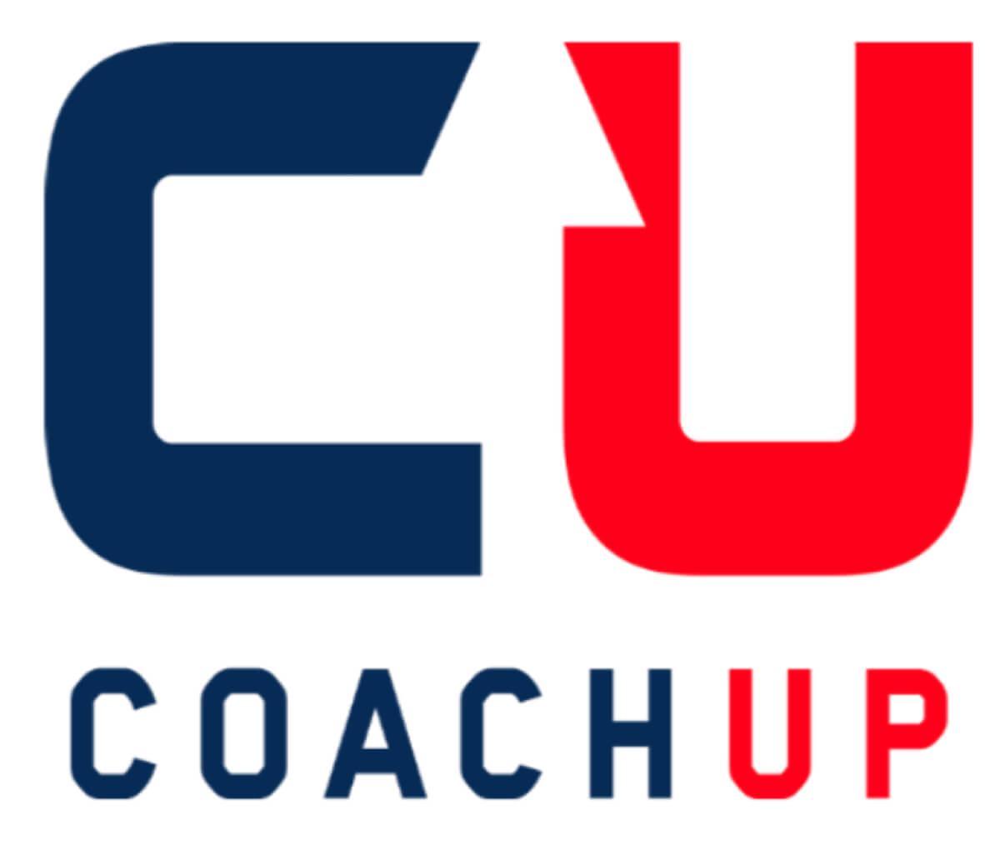
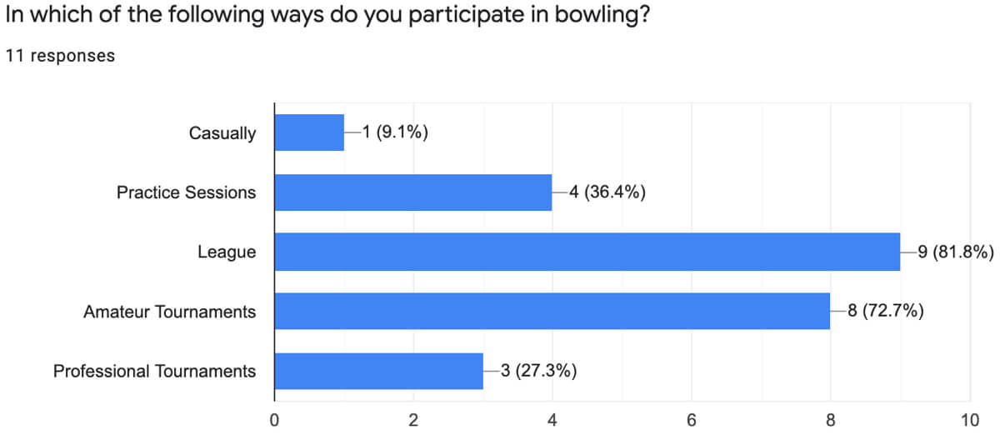

Lane-Side Coach

About
- Responsive Web App
- New Jersey, USA
- 8 Months
My Role
- UX Designer
- User-Centered Design
- User Research
Tools
- Sketch
- InVision
- Balsamiq
- Usability Hub
The Inception of Lane-Side Coach
The Problem
- Bowlers don't know how to find an affordable bowling coach with a flexible schedule.
- Coaches don't know how to advertise their services.
The Objective
- Provide bowlers with a way to locate affordable coaches and meet virtually for lessons.
- Provide coaches with a way to recruit bowlers in need of instruction.
A Starting Point: Competitive Analysis
I found no apps in the United States that connect bowlers with coaches.

CoachUp helps athletes obtain coaches from 32 sports - not bowling.
User Research: Learning About Bowlers and Coaches
Research Goals
- Identify what creates a positive coaching experience.
- Understand users' bowling behavior.
- Identify tasks users would like to be able to complete when using a bowling app.
- Identify the context in which users would use a bowling app.
User Surveys via Google Forms (11 Participants)


In-person User Interviews (3 Participants)
"I'm not sure how I'd recruit students. My students found me through word of
mouth. - Bowling Coach"
"I'm not sure how I'd find a new coach. My dad helped me find my first coach.
He ran the local pro shop" - Bowler
"My friends have helped me with timing, my posture, and with watching my
shoulder so it doesn't drop when I bowl." - Bowler
"My coach is my mentor and we have a great relationship. He understands my
game and is the best to help me. I look up to him." - Bowler
Solutions
- Allow bowlers to search for a coach via location and level of certification.
- Allow coaches to create a profile to make their background, skills, and services known.
- Allow video calls so help can be offered in real time.
- Allow bowlers to message a coach to ask questions prior to booking.
Affinity Mapping - Let's make sense of this information.


Who Are Our Users?
User Personas
Identifying Jake Matthews - The Bowler
- Bowler research participants were motivated to improve their game through formal coaching but didn't know how to find a coach.
- Casual help through friends and YouTube videos isn’t enough to improve.
- Bowler, lane, and coach’s availability made scheduling appointments difficult, sparking a need for convenient virtual appointments.
Jake's Persona: The Bowler
Identifying David Smith - The Coach
- Coach research participants wanted to help bowlers but didn’t have a place to advertise their services.
- hey also needed a way to find other coaches in the event that the bowler needed to learn skills they were not qualified to teach.

David's Persona: The Bowling Coach
User Journeys

Jake's User Journey

David's User Journey
Information Architecture - Let's Talk Structure
Card Sort
- The card sort was an important component of how I determined the structure of Lane-Side Coach.
- 6 participants digitally completed the card sort which provided data used to design the site map.

Similarity Matrix

Site Map
User Flows
Bowler: Find a coach & schedule an appointment.
Bowler: Attend a virtual appointment.

Coach: View & edit the profile.
Low Fidelity Wireframes and Initial Prototyping
Paper/Pencil Flow - Find a Coach and Schedule an Appointment
Bowler: Find a coach & schedule an appointment.
From Low Fidelity to High Fidelity
I brought all of my wireframes up to high fidelity prior to user testing.
These were created with Paper/Pencil, Balsamiq, and then Sketch.

Login Screen
Search Results Screen
Coach's Profile Screen
Desktop: Search Results
Usability Testing: Let's see how the design works.
About the Tests
With informed consent and a test script, I conducted 6 user tests. You can
review the test script and full test report here.
- 3 men & 3 women were tested.
- 2 participated in moderated in-person tests.
- Due to the COVID-19 pandemic, the other 4 participated in moderated remote tests.
- All participants were tested on both mobile and desktop versions.
Making Sense of the Data
I analyzed notes and video recordings using affinity mapping and a rainbow
spreadsheet to help drive new iterations of my design.
"I'd like to see upcoming appointments on the home page."
"I thought under 'My Account' there would be something about upcoming
appointments. 'Appointments' should say 'My Appointments' to clarify."
Preference Testing
- 19 Participants
- Statistically significant results helped facilitate design decisions.

Login Screen
Onboarding Screen
Applying User Feedback & UI Design

Login Screen Iterations
- On mobile, tabs were created so the option to sign up is easily found.
- Accessibility components were added.
- Glyphs for username and password
- Ability to see the password as it is typed
- Improved color contrast

Desktop Login Iterations

Home Screen Iterations
- 2 different states were created based on whether or not the user has an appointment scheduled.
- Buttons were added to help the user more easily schedule and attend appointments.

Desktop Home Screen Iterations
Search Results Iterations
- The search bar was modified to meet ios guidelines
- "Favorite" hearts were placed off of the picture to increase contrast.
- Information about coaches was grouped with spacing to help the user see the information faster.
- Bottom navigation has been designed for accessibility with selected icons being filled in and unselected icons being simply outlined.

Desktop Search Results Screen Iterations

Coach's Profile Iterations
- CTA buttons were moved up to be found easier per user feedback during testing.
- Users wanted to see user ratings on the profile.
- Buttons were changed to be consistent throughout the app.
- Demographic information's spacing was reformatted so that it would be easier to read.

Desktop Coach's Profile Screen Iterations

My Appointments Iterations
- Bottom navigation label was changed from "Appointments" to "My Appointments per testing."
- Virtual appointment button was moved up to make it easier to find.
- Final iterations eliminated unnecessary screens and put more information out front.
- Coach names can be seen next to appointments.
- Appointment history can be easily seen.
- Ratings of previous appointments can be seen.
Desktop My Appointments Screen Iterations
See For Yourself: Clickable Prototypes
User Flows
- The bowling coach views and edits his profile.
- The bowler searches for and schedules an appointment with a bowling coach.
- The bowler attends a virtual appointment.
Mobile Prototype

Explore the mobile prototype by clicking here.
Desktop Prototype
Explore the desktop prototype by clicking here.